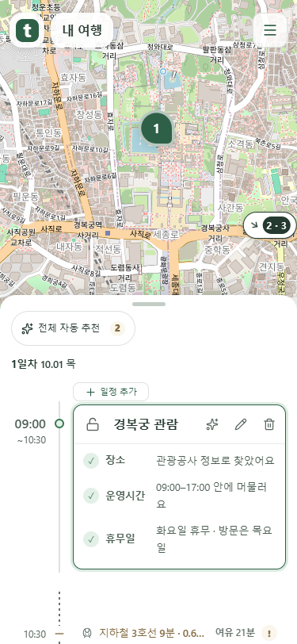
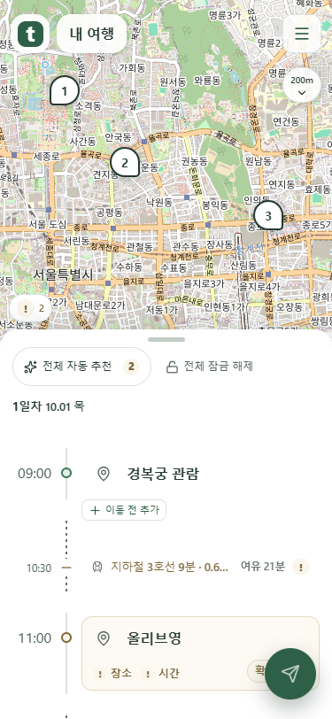
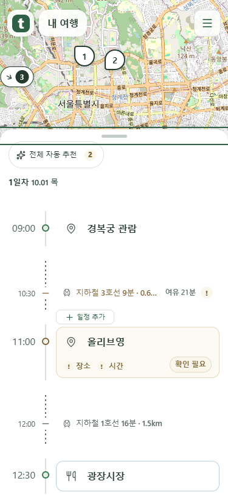

먼 마커와 목록 도구 배치
2026-10-10 추가 요청을 반영한 새 목업입니다. 기존 미리보기는 보존했습니다.
지도 조작 중에는 좁게
거리 글자를 숨기고 방향과 번호만 남깁니다. 지도 조작을 멈추면 거리를 다시 표시합니다.

전체 자동 추천 옆에 전체 잠금 해제
목록 맨 위에만 둡니다. 한 번 누르면 이 여행의 잠금을 모두 해제하며 시간·장소·예약 보호는 유지합니다.

카드 테두리 대신 일정 사이 왼쪽
이름이 보이는 + 일정 추가를 독립된 간격에 배치했습니다. 이동 전 경계는 + 이동 전 추가로 구분합니다.

로컬 mock 서버 화면입니다. 이미지를 누르면 원본 크기로 볼 수 있습니다.